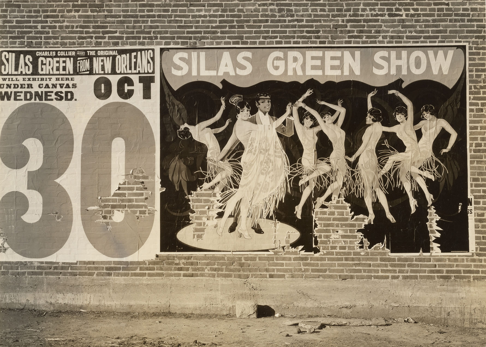
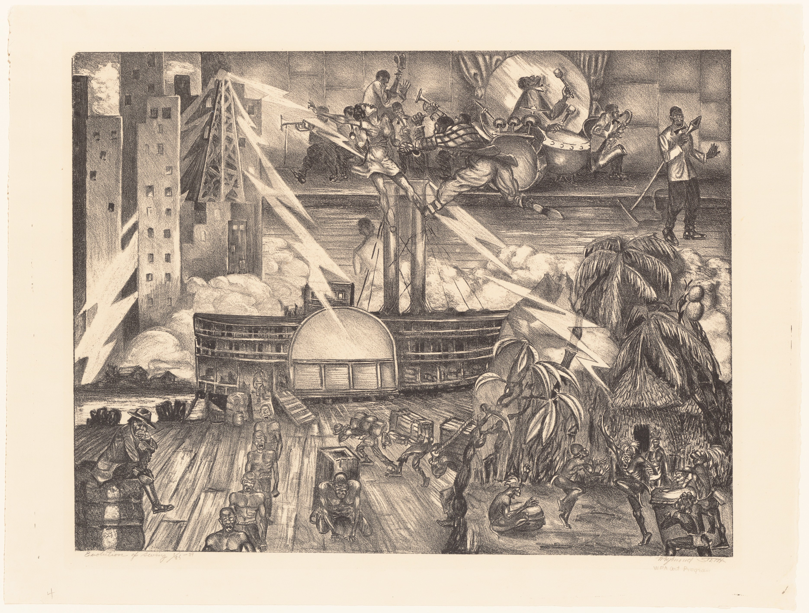
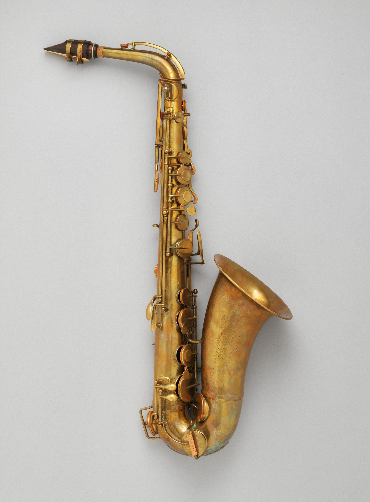

African Americans owned and performed the traveling minstrel show "Silas Green from New Orleans." From 1907 to 1958 they brought jazz, ragtime, and comedy to the Southern states.

Raymond Steth- Evolution of Swing

French; Alto saxophone in E-flat; Aerophone-Reed Vibrated-single reed cylindrical